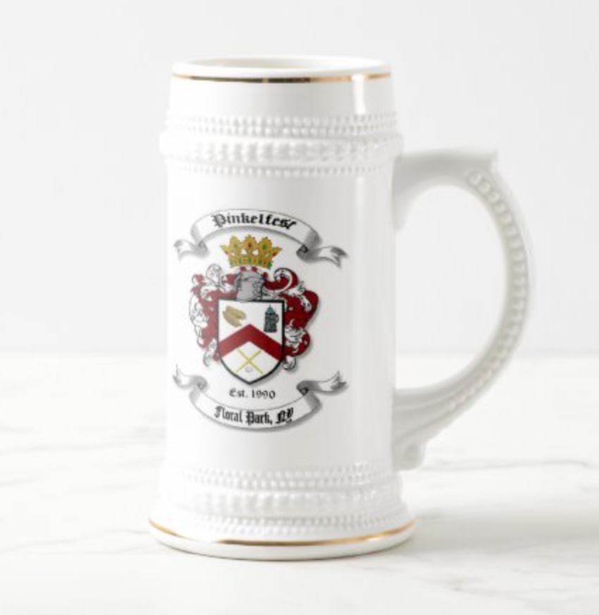
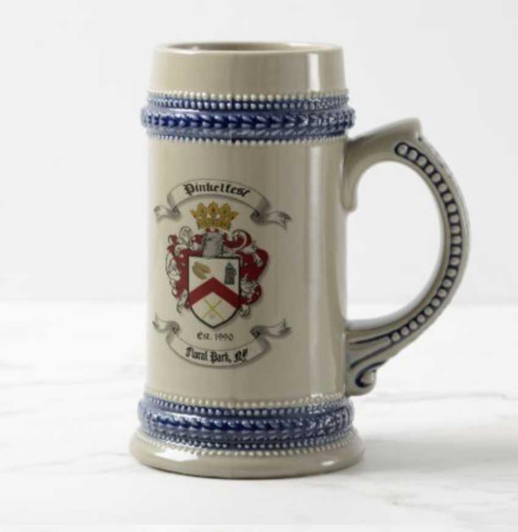
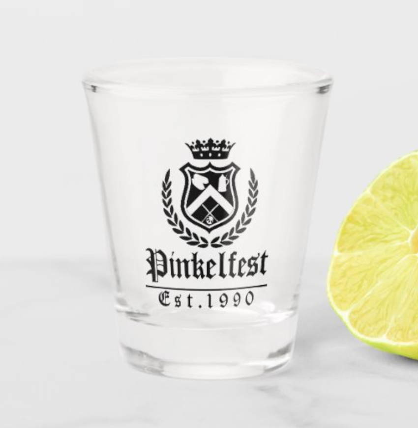
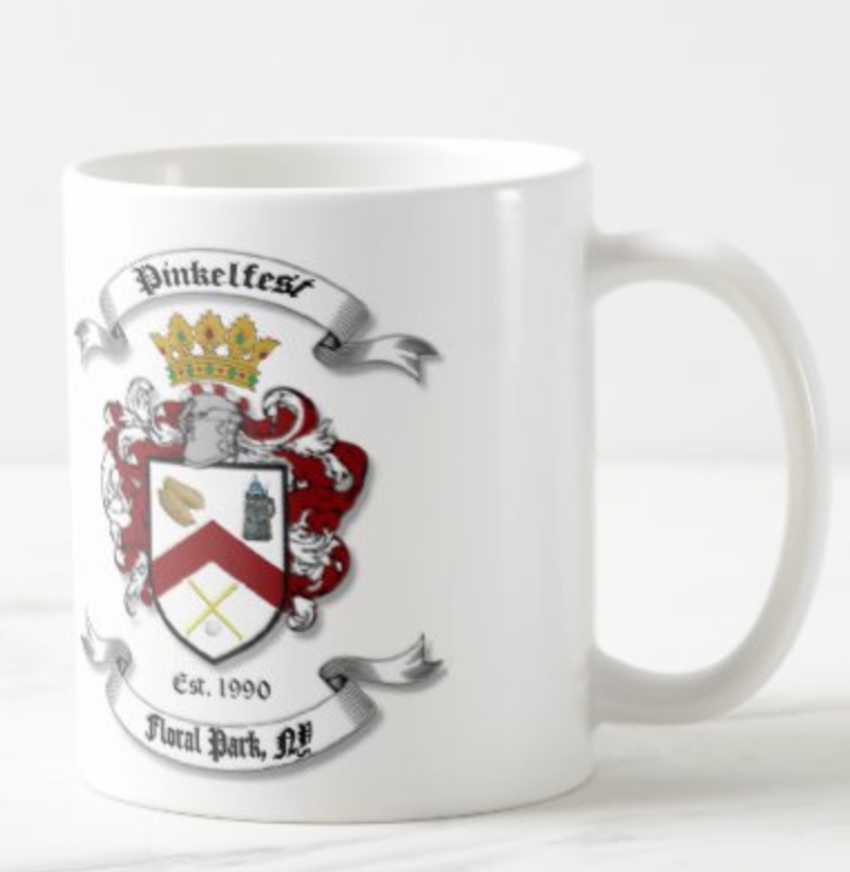
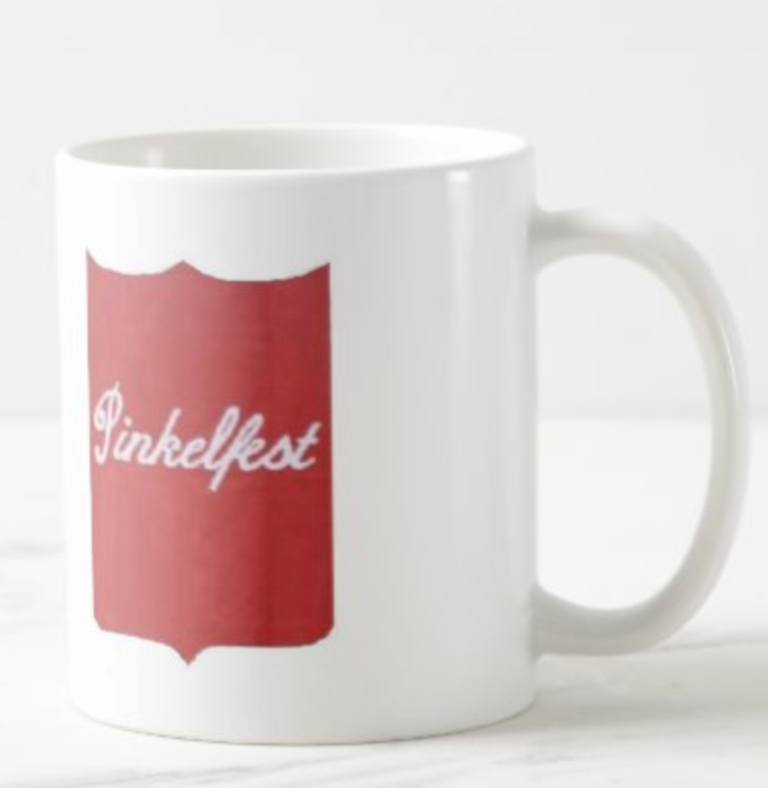
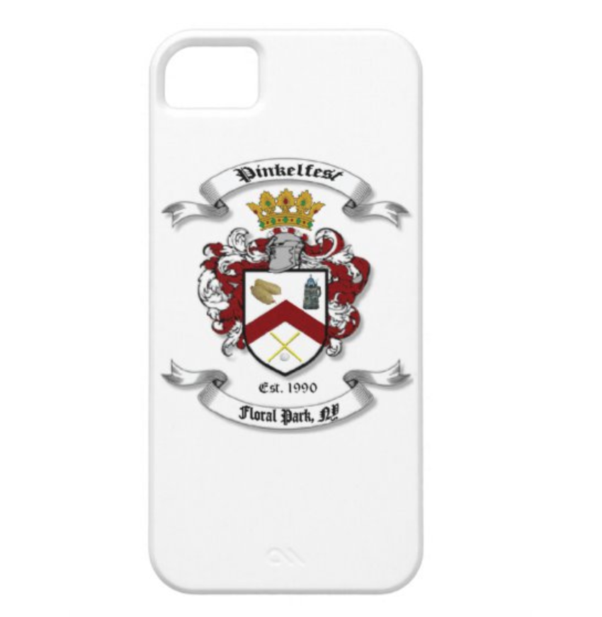
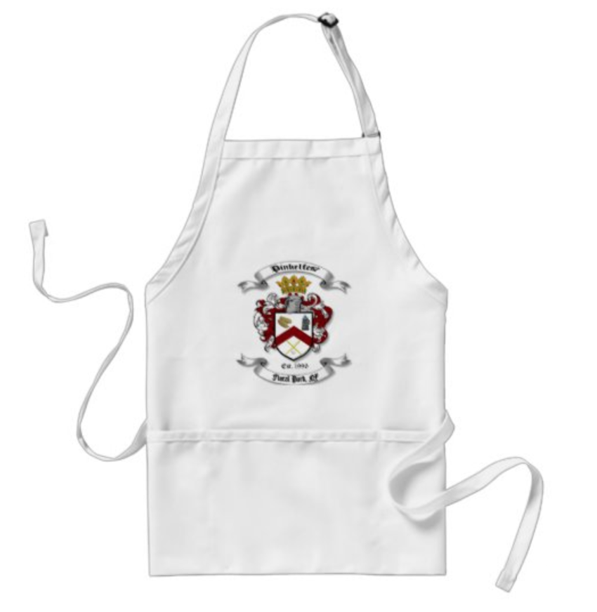
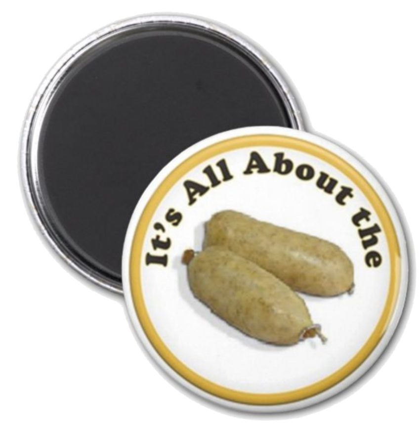
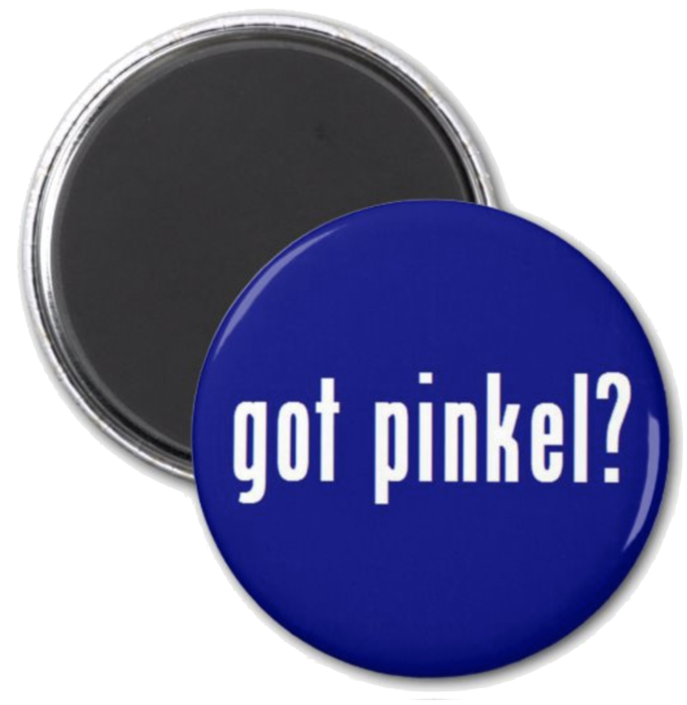
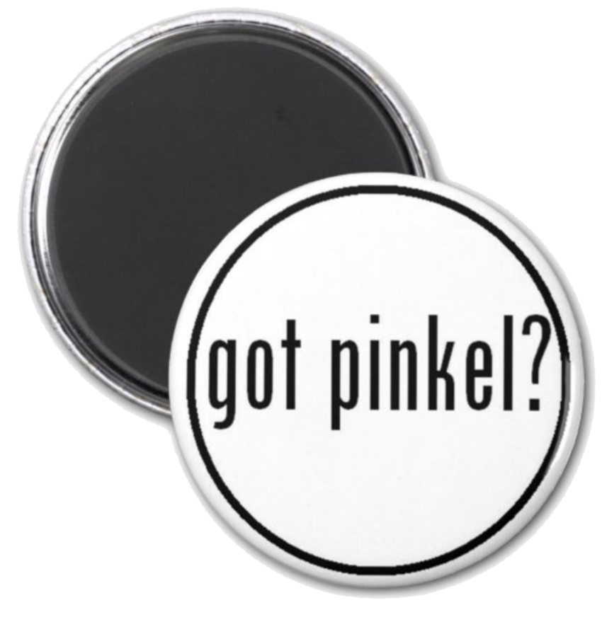

Pinkel Shop
Grab one of our Pinkelfest products!
2021 Pinkelfest Stein
 Style: Stein
Style: SteinDon’t just drink beer, celebrate it with a made-to-order beer stein. Our traditional German beer mug features ornate borders at the rim and base and a detailed handle. Honor your beer with the right vessel for the job, or give a stein to the beer lover in your life.
- Available in 2 colors – white with metallic gold and gray with blue color
- Dimensions: 3” diameter x 6.6" h; 22-ounce capacity.
- Dishwasher safe (though we recommend keeping your beer icy cold!)
- Meets FDA requirements for food and beverage safety.
Pinkelfest Stein
Style: Stein
Don’t just drink beer, celebrate it with a made-to-order beer stein. Our traditional German beer mug features ornate borders at the rim and base and a detailed handle. Honor your beer with the right vessel for the job, or give a stein to the beer lover in your life.
- Available in 2 colors – white with metallic gold and gray with blue color
- Dimensions: 3” diameter x 6.6" h; 22-ounce capacity.
- Dishwasher safe
- Meets FDA requirements for food and beverage safety.
Pinkelfest Stein - Gray
Style: SteinDon’t just drink beer, celebrate it with a made-to-order beer stein. Our traditional German beer mug features ornate borders at the rim and base and a detailed handle. Honor your beer with the right vessel for the job, or give a stein to the beer lover in your life.
- Available in 2 colors – white with metallic gold and gray with blue color
- Dimensions: 3” diameter x 6.6" h; 22-ounce capacity.
- Dishwasher safe
- Meets FDA requirements for food and beverage safety.
Pinkel Shot Glass 2021
Style: 1.5 oz Shot Glass
Because no good story ever started with drinking water. Grab a custom shot glass and let's really get this party started!
- Available in 11-ounce or 15-ounce
- Dimensions: 2" x 3.375", design area: 1.75" x 1.5", 1.5 oz capacity
- Perfect for parties, weddings, business events, and not-so-serious functions
- Hand wash only
Pinkel Crest Mug
Style: Classic Mug
Not a beer person? Not a problem! Enjoy a cup of coffee, tea, hot chocolate and more with this fine Pinkel Crest Mug! Our Pinkelfest logo on your favorite mug, is the great way to start off anyone's day! Honor your drink with the right mug for the job, or give a mug to the mug lover in your life.
- Available in 11-ounce or 15-ounce
- Dimensions: 11-ounce: 3.8” h x 3.2” diameter. 15-ounce: 4.5” high x 3.4” diameter
- Microwave and dishwasher safe
- Meets FDA requirements for food and beverage safety
Pinkel Flag Mug
Style: Classic MugNot a beer person? Not a problem! Enjoy a cup of coffee, tea, hot chocolate and more with this fine Pinkel Crest Mug! Our Pinkelfest logo on your favorite mug, is the great way to start off anyone's day! Honor your drink with the right mug for the job, or give a mug to the mug lover in your life.
- Available in 11-ounce or 15-ounce
- Dimensions: 11-ounce: 3.8” h x 3.2” diameter. 15-ounce: 4.5” high x 3.4” diameter
- Dishwasher safe
- Microwave and dishwasher safe
- Meets FDA requirements for food and beverage safety
Pinkel Crest - White Case
Style: Case-Mate Barely There iPhone SE + iPhone 5/5S Case
Protect your iPhone with a customizable Barely There Case-Mate case. This form-fitting case covers the back and corners of your iPhone with an impact resistant, flexible plastic shell, while still providing access to all ports and buttons. Designed for iPhone SE + iPhone 5/5S, this sleek and lightweight case is the perfect way to show off your custom style.
- Fits Apple iPhone SE + iPhone 5/5S
- Durable & lightweight hard plastic case
- Access to all ports, controls & sensors Printed in the USA
Pinkel Apron Crest
Size: StandardWhether you are cooking pinkel, hotdogs, burgers, eggs or cake, you won’t have to kiss the cook if you get them one of these classic aprons. It's super useful with its three spacious front pockets - perfect for all your utensils and tools. Get one for yourself to keep you clean while cooking, or give an apron to the cook lover in your life.
- Dimensions: 24"l x 28"w
- Made from a 35/65 cotton-poly twill blend
- Machine washable
- Made in U.S.A.
Its All About The Pinkel Magnet
Shape: Circle
Your refrigerator called and said it was feeling mighty lonely. Why not give it a few friends to play with by creating a couple of custom magnets! Add your favorite image to a round magnet, or shop the thousands of options for a cool square magnet.
- Available in 3 sizes from 1.25" to 3" diameter
- Printed on 100% recycled paper
- Covered with scratch and UV-resistant mylar
- Available in square shape also
GOT PINKEL? MAGNET - BLUE
Shape: CircleYour refrigerator called and said it was feeling mighty lonely. Why not give it a few friends to play with by creating a couple of custom magnets! Add your favorite image to a round magnet, or shop the thousands of options for a cool square magnet.
- Available in 3 sizes from 1.25" to 3" diameter
- Printed on 100% recycled paper
- Covered with scratch and UV-resistant mylar
- Available in square shape also
GOT PINKEL? MAGNET - WHITE
Shape: Circle
Your refrigerator called and said it was feeling mighty lonely. Why not give it a few friends to play with by creating a couple of custom magnets! Add your favorite image to a round magnet, or shop the thousands of options for a cool square magnet.
- Available in 3 sizes from 1.25" to 3" diameter
- Printed on 100% recycled paper
- Covered with scratch and UV-resistant mylar
- Available in square shape also